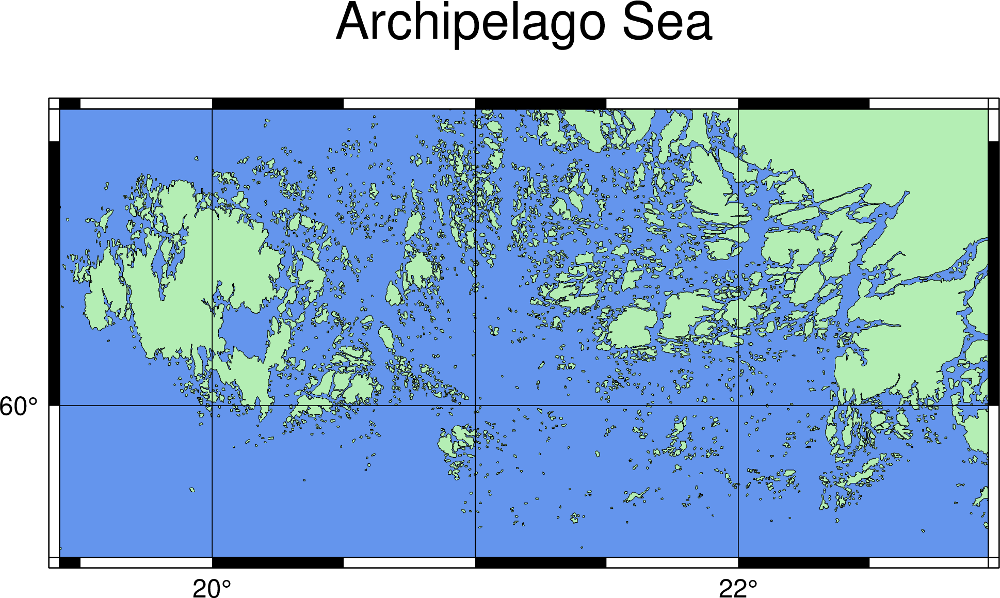

Make Your First Map
Contents
1. Make Your First Map#
Attention
This instruction is for the Modern Mode in GMT 6. For making the same map using the GMT 6 Classic Mode or GMT 4-5, Please go to this page.
The very first command you need to learn is definitely coast, which is also the easiest command for mapping. In this chapter, we’re going to see how to make a map with coastlines using coast. The other topics in this chapter are the style of GMT input and how to set up these input parameters.
1.1. Goal#
Make a map of the Archipelago Sea, as the figure here shows. Located in Northern Europe, the Archipelago Sea is part of the Baltic Sea. As its name suggests, the sea is occupied by numerous islands in any size. Although Most islands are small, the Archipelago Sea possibly contains the most island in the world. The largest island in the archipelago is Åland, an autonomous region of Finland. Such a place makes itself ideal for showing how coast can fine-tune your coastline map.
{kind=link}
Go to the final Script
1.2. Commands and Techniques#
coast- plot shorelinesGMT shared options:
-B-J-R-UHow to adjust parameters at a GMT command line
A simple way to set up a map frame
Using GMT to generate a map in different formats
1.3. Procedure#
The first step of plotting a map is to determine the area of interest. Even though we know we are going to plot the Archipelago Sea, we still can’t start without a precise map extent. The most convenient way to retrieve map extent in Lat/Long representation is to go to Google Maps and search for Archipelago Sea. When the map jumps to the region of our interest, right-click on “What’s here?”. Then the name of the area and the Lat/Long would appear in the bottom.

Note how longitude and latitude are represented here: there are two numbers in the pop-up window. The first one 59.865253 is latitude; positive and negative values are N and S, respectively. The second one 19.435697 is longitude; positive and negative values are E and W, respectively. Also, it does not use the “degrees, minutes, seconds” convention; instead, it converts all minutes and seconds and gives you a real number in degrees. It’s much easier to use this format in math calculation, and thus GMT adopts it as the default representation for geographical coordinates.
After taking a look, we are going to select longitude from 19.42 to 22.95 degrees and latitude from 59.71 to 60.56 degrees for mapping. Also, feel free to try whatever region if you would like! Now, open Terminal and enter the following prompt:
$ gmt coast
You would see a few pages that show all the syntax and options of coast. If you’ve already been super familiar with these options and want to make sure for the usage, you can also enter the command like the following line, and it will only show the syntax on screen.
$ gmt coast -
Almost all GMT commands, including coast, have a syntax like this:
$ gmt command (input_file) [option1 option2 option3...]
Every string starting with a minus sign (-) is an option, or more technically speaking, a flag or an argument. If a string doesn’t start with a minus sign, it could only be the input file(s). Every GMT command usually has a required option or two; if other options are omitted, GMT will use the default settings. The order between options and input files doesn’t matter at all. For example, it is ok to place all options before the input file name.
coast has got a little special: an input file is not required! Given that, how does the program know where the coastline is? The answer is simple: there is a database called GSHHG along with the standard installation of GMT. The database contains a lot of necessary information about the world, like coastline, country borders, rivers, etc. What coast does is to load data from GSHHS and plot them on your map. Thus, coast is not only capable of drawing coastline but is also used for drawing water bodies and countries. When using coast, we only need to focus on setting up options! The first required flag is -R (Region), which is used to specify extent (covered area) of a map. We can just put all the parameters directly after -R, without any spaces. Typically, there are two ways to specify extent using -R flag:
-R19.42/22.95/59.71/60.56
-R19.42/59.71/22.95/60.56r
The first format is W_Border/E_Border/S_Border/N_Border; that is, we specify the region by x coordinate (longitude) and y coordinate (latitude). The second format needs the coordinates of the bottom-left (BL) corner and the top-right (TR) corner, so it becomes BL_long/BL_lat/TR_long/TR_lat. Don’t forget to add an r if you are using the second way. No matter whichever method you use, it would give you the same result. Here we will use the first format in this chapter.
For a simple map, a single GMT command can get the job done. For example, in this chapter we only need basic elements like coastline, color filling, map grids, and a title. coast is capable of doing all of that. Thus, after adding -R we still need another flag to specify the output file name. This flag is actually the file extension (format). The syntax goes like this:
-png archi_sea # archi_sea is the name of the output file. Note that there is a space between png and the filename. The full file name is archi_sea.png
-pdf archi_sea # generate PDF format instead. The file name is archi_sea.pdf.
The other available formats include -eps, -ps, -jpg, and so on, according to the table of formats in the GMT official manual. Now let see how it goes after combining -R and -png. Enter the following prompt in the terminal and run it:
$ gmt coast -R19.42/22.95/59.71/60.56 -png archi_sea
coast [ERROR]: Syntax error: Must specify at least one of -C, -G, -S, -I, -N, -Q and -W
Oops, an error jumps out! The issue here is that the command still lacks a few options about the “drawing style.” GMT asks us to specify at least one drawing style. Here we can use -W for the coastline pen attribute. A pen attribute contains three values: thickness, color, and style. The syntax is
-Wlinewidth,linecolor,linestyle
If any is omitted, the default is used. Here we try to specify a black pen with a thickness at 0.1 points (1 point = 1/72 inches = 0.03527 cm):
-W0.1p,black
0.1p``means 0.1 points, and ``black tells GMT to use a black pen. We didn’t specify line style here so that GMT will use a solid line. Note that here we used the pre-defined color name in GMT, and all of these names are listed here.
Note
For the advanced and detailed settings of the pen attributes, like line styles or custom colors using RGB values, please go to Pen and Painting.
Now we have set 3 arguments up and coast should be able to run smoothly. Type the following command, and if you see this:
$ gmt coast -R19.42/22.95/59.71/60.56 -W0.1p,black -png archi_sea
The very first map has already shown the coastline of the Archipelago Sea, but it is hard to read the map because we didn’t plot colors and Lat/Long information. Besides, the default map coordinates in GMT is WGS 84, which makes your map look flattened if it is in the high-latitude region. We can change projected coordinates so that it is clear to see the coastline along the latitude. In GMT, the -J flag is used to assign a map projection. There are various projections at your service, but here we are going to pick a common one for drawing a regional map: Mercator projection. The syntax is:
-JM6i
The M after the -J is the code of Mercator projection, and 6i means that the width of the map is 6 inches. If you don’t know how long 6 inches are, just change it into -JM15c. This means the width of the map is 15 centimeters, which is roughly 6 inches wide.
Attention
-J and -R are related to each other. When the map projection changes, the way to set map extent and size also changes a little bit. Please see GMT official documentation for more details. For the usage of different map projections, please see any GIS or geodesy textbooks. In addition, the default geodetic datum of GMT is the WGS84 reference ellipsoid. If you would like to change it, please see Design Map Layout.
To improve the readability of the map, we can fill land and sea areas with colors. We will need -G (Ground) and -S (Sea) flags respectively:
-Gdarkseagreen2
-Scornflowerblue
Like black, darkseagreen2 and cornflowerblue are also pre-defined color names in GMT. Let’s pull all options together, and you will get the following command:
$ gmt coast -R19.42/22.95/59.71/60.56 -JM6i -W0.1p,black -Gdarkseagreen2 -Scornflowerblue -png archi_sea
Now the command gets a bit longer, which is quite normal when using GMT, especially when you want to change the defaults and make a pretty map. It’s not a problem when a long command is entered at the prompt line because the terminal window would automatically go to the next line. However, if later you are writing a GMT script and want to make your script neat, you can use the UNIX line-break sign \ to continue the command at a new line. The following example would give the same result as the previous one:
$ gmt coast -R19.42/22.95/59.71/60.56 -JM6i -W0.1p,black -Gdarkseagreen2 \
-Scornflowerblue -png archi_sea
In this tutorial, we also use \ to break a long command for clarity. If you would like to finish your command in one line, just ignore this line-break sign.
Tip
In GMT 6, the coastline is plotted with the highest resolution. If your map covers a broad region, this will cause some problems as coastlines are too dense. To solve this issue, we can change the resolution of coastlines by setting the -D option. The accepted parameters are f (full), h (high), i (intermediate), l (low), and c (crude). For example, -Di sets the intermediate resolution to the coastline.
The above command generates a map like this

Here we can see that the map totally changed by only adjusting the map projection and the colors of land and sea.
Now the main map is almost finished, and it’s time to add a map frame. GMT uses -B to tweak map frame and associated elements, like grids, ticks, annotations, and title. They are collectively called the Basemap settings. -B is one of the most complex arguments in GMT since it’s got tons of styles for your choice. Here we are going to introduce two simplest combinations:
-Ba(annotation_spacing)f(tick_spacing)g(grid_spacing)
-B(four_borders)+t(title)
The first combination gives the spacing number to annotation (tick mark), tick, and grid. It used the same unit as specified in -R. For example, -Ba1f1g1 means annotations, ticks, and grids are plotted at every degree; -Ba2f1 means that “annotation is labeled every other degree, tick is plotted every degree, and don’t add any grid.” The second combination is for four sides of a map, and it uses W, S, E, N for West, South, East, and North. If it’s a capital letter, GMT puts everything (frame and annotations) at this side; if it’s a lowercase letter, only the frame will be added to this side; if you don’t add a letter, nothing will be plotted. For example, -Bwsne is to put a map frame without any annotation (ignoring the -Ba setting in the first combination). -BWSe is to put a frame with annotation at the west and south sides, but only frame itself at east side (and no frame at the north – the map would look broken!). It’s also ok to add +t at the second combination, which a map title followed by the +t flag. Two combinations can be both used in the same command. For instance, we can design our map like this:
$ gmt coast -R19.42/22.95/59.71/60.56 -JM6i -W0.1p,black -Gdarkseagreen2 \
-Scornflowerblue -Ba2f0.5g1 -BWSne+t"Archipelago Sea" -png archi_sea
In this case, a map frame is added to all four edges, but annotations are only marked at the west side and the south side. Lat/long annotations are at every 2 degrees, ticks (the black and white bars in the map frame) are 0.5 degrees wide, and grid lines are drawn at every degree. The map is also entitled as Archipelago Sea, like the following figure shows:

Tip
In fact, -B is a shortened version of another GMT command called basemap. We can use basemap to plot many more complex frame settings independently, and then filling the map content into the frame is just simple. For advanced -B options like custom tick marks, adjusting single axis, primary and secondary grid, and special characters, please see later chapter.
You would probably feel that there are too many islands in the Archipelago Sea, and they easily distract readers, especially if we want to label other information on the map. To simplify our map and make readers focus on crucial details, coast provides -A flag to let us specify a minimum area of an island, in square kilometers. Once it’s set, coast would ignore any island that is smaller than the given area. Here we are going to make islands that are lower than 0.1 square kilometers disappear:
$ gmt coast -R19.42/22.95/59.71/60.56 -JM6i -W0.1p,black -Gdarkseagreen2 \
-Scornflowerblue -Ba2f0.5g1 -BWSne+t"Archipelago Sea" -A0.1 \
-png archi_sea
With fewer islands, the map looks cleaner but still keeps the sense of its name, the “Archipelago Sea.”
{kind=link}
Now our map is close to finish. Lastly, let us use the -U flag to add a GMT mark and time stamp at the bottom left corner. -U flag can go along without any additional parameters.
1.4. Script#
The final script for our map is:
$ gmt coast -R19.42/22.95/59.71/60.56 -JM6i -W0.1p,black -Gdarkseagreen2 \
-Scornflowerblue -Ba2f0.5g1 -BWSne+t"Archipelago Sea" -A0.1 -U \
-png archi_sea
Note
“Plot the coastline map - map extent is set to (19.42E - 22.95E, 59.71N - 60.56N) in Mercator projection and 6 inches wide. Coastlines are black and 0.1 point wide. The land area is filled with the color darkseagreen2, and the water area is filled with cornflowerblue. We plot a border frame at all of its edges and put annotation marks on the left and bottom. Annotation spacing is 2 degrees, tick spacing is 0.5 degrees, and grid spacing is 1 degree. The map is entitled Archipelago Sea and saved as archi_sea.png.”
Check the final map
1.5. PyGMT script#
You can make the same map using the following PyGMT script:
import pygmt
fig = pygmt.Figure()
fig.coast(region=[19.42, 22.95, 59.71, 60.56], projection="M6i", shorelines=['0.1p', 'black'], land='green',
water='cornflowerblue', frame=['a2f0.5g1', 'WSne+t"Archipelago Sea"'], area_thresh=0.1, timestamp=True)
fig.show()
fig.savefig('archi_sea_pygmt.png')
You can use the following Binder link to try this code:
1.6. Exercise#
Make a map illustrating the coastline of Sulawesi. Sulawesi is the fourth largest island in Indonesia with a fun shape like the letter K or a dancing person. Use the coordinate
118.34E to 125.70Eand6.12S to 2.08N.